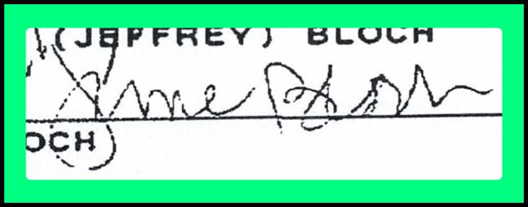

Introduction
This presentation provides a concise overview of signature discrepancies and associated documentation related to the estate of [Decedent Name].
Please use the Table of Contents above to navigate between sections.
↑ Back to TopCase Summary
This webpage was prepared by Jaden Alexandra Riley, the pro se contestant in the matter of the Estate of June Petrovich Bloch, for the internal review and evaluation of personnel at Fiduciary Trust International . Its purpose is to provide an organized summary of the Travis County, Texas probate proceedings associated with the decedent’s will and related filings, as well as supporting documentation relevant to questions of authenticity and potential irregularities in signatures and documents submitted to the court.
Probate Case Overview
- Case Title: In the Estate of June A. Bloch a/k/a June P. Bloch a/k/a June Petrovich Bloch, Deceased
- Case No.: C-1-PB-23-000919
- Court: Probate Court #1, Travis County, Texas
- Judicial Officer: Judge Guy Herman
- Filed on: April 24, 2023
- Case Type: Independent Administration
- Subtype: Probate Will and Issue Letters Testamentary
- Case Status (as of Dec 19 2023): Off Court Active Docket
- Independent Executor: Lindsey Ann Bloch
- Pro Se Contestant: Jaden Alexandra Riley
Case Documents and Correspondence Index
The following table lists all documents, filings, exhibits, and related communications associated with the Travis County Probate Court proceeding for this estate. Entries include materials filed with the court, documents exchanged by email or service, and other relevant records organized chronologically. Each entry may include links to local copies stored in this repository and to the corresponding case summary or document entry in the Travis County Odyssey web portal.
Legend – View / Download File Column
| Label | Meaning |
|---|---|
| Not Obtainable | No copy available; document exists on docket but is not accessible to parties or the public. |
| Unofficial Copy | Downloaded directly from the Travis County Odyssey portal; not an official stamped copy. |
| Unredacted Copy | Original version of a document that was filed but redacted or obscured in the public record. |
| Service Only | Served on parties (via email or e-file) but not filed with the court or publicly available. |
| Document consists of email correspondence relevant to the proceeding. | |
| Video | Recorded video evidence or demonstration relevant to the proceeding. |
| Date | Document Title | View / Download File | Probate Open Records | Filer |
|---|---|---|---|---|
| 04/24/23 | Posted Citation – Application for Probate of Will and Issuance of Letters Testamentary | Not Obtainable | 🔗 C-1-PB-23-000919 | Executor |
| 04/24/23 | Abstract Application for Probate Action | 🔗 Unofficial Copy | 🔗 C-1-PB-23-000919 | Court |
| 04/24/23 | Application for Probate of Will and Issuance of Letters Testamentary | 🔗 Unofficial Copy | 🔗 C-1-PB-23-000919 | Executor |
| 04/24/23 | Will (E-File) | 🔗 Unofficial Copy | 🔗 C-1-PB-23-000919 | Executor |
| 04/24/23 | Death Certificate | 🔗 Unofficial Copy | 🔗 C-1-PB-23-000919 | Executor |
| 04/25/23 | Executor's Letter to the Clerk | 🔗 Unofficial Copy | 🔗 C-1-PB-23-000919 | Executor |
| 04/25/23 | Will (Filed In-Person) | 🔗 Unofficial Copy | 🔗 C-1-PB-23-000919 | Executor |
| 04/26/23 | Posted Citation with Officer's Return – Application for Probate of Will and Issuance of Letters Testamentary | 🔗 Unofficial Copy | 🔗 C-1-PB-23-000919 | Executor |
| 05/02/23 | Abstarct Sent to Voter Registration | Not Obtainable | 🔗 C-1-PB-23-000919 | Executor |
| 05/18/23 | Letters Testamentary | Not Obtainable | 🔗 C-1-PB-23-000919 | Executor |
| 05/18/23 | Proof of Death and Other Facts | 🔗 Unofficial Copy | 🔗 C-1-PB-23-000919 | Executor |
| 05/18/23 | Order Admitting Will to Probate and Authorizing Letters Testamentary | 🔗 Unofficial Copy | 🔗 C-1-PB-23-000919 | Executor |
| 05/18/23 | Oath of Independent Executor | 🔗 Unofficial Copy | 🔗 C-1-PB-23-000919 | Court |
| 06/13/23 | Publisher's Affidavit | 🔗 Unofficial Copy | 🔗 C-1-PB-23-000919 | Executor |
| 07/05/23 | Section 308.004 Certificate of Attorney | 🔗 Unofficial Copy | 🔗 C-1-PB-23-000919 | Executor |
| 08/15/23 | Application for Extension of Time in Which to File Inventory Appraisement and List of Claims | 🔗 Unofficial Copy | 🔗 C-1-PB-23-000919 | Executor |
| 08/15/23 | Proposed Order | Not Obtainable | 🔗 C-1-PB-23-000919 | Executor |
| 08/15/23 | Executor's Customer Copy Request | 🔗 Unofficial Copy | 🔗 C-1-PB-23-000919 | Executor |
| 09/01/23 | Order Approving Extension to File Inventory | Not Obtainable | 🔗 C-1-PB-23-000919 | Court |
| 12/19/23 | Affidavit in Lieu of Inventory, Appraisement, and List of Claims | 🔗 Unofficial Copy | 🔗 C-1-PB-23-000919 | Executor |
| 02/12/25 | Original Petition | 🔗 Unredacted Copy | 🔗 C-1-PB-23-000919 | Pro Se Contestant |
| 02/12/25 | Statement of Inability to Afford Court Costs | 🔗 Unofficial Copy | 🔗 C-1-PB-23-000919 | Pro Se Contestant |
| 02/12/25 | Exhibit A – Analysis and Evidence Supporting Forgery Claims | 🔗 Unredacted Copy | 🔗 C-1-PB-23-000919 | Pro Se Contestant |
| 02/12/25 | Exhibit B – Progression of June’s Cognitive and Physical Decline Resulting in Dementia and Loss of Decision-Making Capacity | 🔗 Unredacted Copy | 🔗 C-1-PB-23-000919 | Pro Se Contestant |
| 02/12/25 | Exhibit C – Email Sent to Probate Authorities on June 1, 2023 | 🔗 Unredacted Copy | 🔗 C-1-PB-23-000919 | Pro Se Contestant |
| 02/12/25 | Exhibit D – Family Photos and Evidence of Relationship | 🔗 Unredacted Copy | 🔗 C-1-PB-23-000919 | Pro Se Contestant |
| 02/12/25 | Exhibit E – Communications with June Bloch | 🔗 Unredacted Copy | 🔗 C-1-PB-23-000919 | Pro Se Contestant |
| 02/12/25 | Exhibit F – Communications with Lindsey Bloch | 🔗 Unredacted Copy | 🔗 C-1-PB-23-000919 | Pro Se Contestant |
| 02/12/25 | Exhibit G – June Bloch's Severe Isolation, Cognitive Decline, and Complete Dependence on Lindsey Bloch | 🔗 Unredacted Copy | 🔗 C-1-PB-23-000919 | Pro Se Contestant |
| 02/12/25 | Exhibit H – In-Person Meeting with Lindsey Bloch on March 18, 2023 | 🔗 Unredacted Copy | 🔗 C-1-PB-23-000919 | Pro Se Contestant |
| 02/12/25 | Exhibit I – Record of Elder Abuse, Exploitation, and Psychological Manipulation | 🔗 Unredacted Copy | 🔗 C-1-PB-23-000919 | Pro Se Contestant |
| 02/12/25 | Exhibit J – Summarized Timeline of Health Decline, Psychological Manipulation, and Elder Financial Fraud | 🔗 Unredacted Copy | 🔗 C-1-PB-23-000919 | Pro Se Contestant |
| 02/12/25 | Exhibit K – Home Equity Loan Lot 21 / 5704 Trailridge Drive | 🔗 Unredacted Copy | 🔗 C-1-PB-23-000919 | Pro Se Contestant |
| 02/12/25 | Exhibit L – Medical Neglect and Failure to Provide Adequate Care | 🔗 Unredacted Copy | 🔗 C-1-PB-23-000919 | Pro Se Contestant |
| 02/12/25 | Motion (Ex Parte) for Preservation of Evidence and Sequestration of Notary Records | 🔗 Unredacted Copy | 🔗 C-1-PB-23-000919 | Pro Se Contestant |
| 02/12/25 | Motion to Seal Personal Information and Request for Court-Ordered Privacy Protections | 🔗 Unredacted Copy | 🔗 C-1-PB-23-000919 | Pro Se Contestant |
| 02/12/25 | Motion for Protective Order to Limit Opposing Counsel’s and Interested Parties’ Communications | 🔗 Unredacted Copy | 🔗 C-1-PB-23-000919 | Pro Se Contestant |
| 02/12/25 | Motion to Restrict Opposing Counsel’s Direct Contact with Petitioner | 🔗 Unredacted Copy | 🔗 C-1-PB-23-000919 | Pro Se Contestant |
| 02/12/25 | Motion to Prohibit Opposing Counsel from Retaliatory or Bad-Faith Filings | 🔗 Unredacted Copy | 🔗 C-1-PB-23-000919 | Pro Se Contestant |
| 02/12/25 | Motion to Impose Immediate Judicial Oversight of Estate Administration | 🔗 Unredacted Copy | 🔗 C-1-PB-23-000919 | Pro Se Contestant |
| 02/12/25 | Motion for Custody of Remains and Temporary Restraining Order to Prevent Disposition | 🔗 Unredacted Copy | 🔗 C-1-PB-23-000919 | Pro Se Contestant |
| 08/11/25 | Pro Se Contestant's Request for Issuance | 🔗 Unofficial Copy | 🔗 C-1-PB-23-000919 | Pro Se Contestant |
| 08/12/25 | Pro Se Contestant's Request for Issuance | 🔗 Unofficial Copy | 🔗 C-1-PB-23-000919 | Pro Se Contestant |
| 08/12/25 | Pro Se Contestant's Request to Add Lis Pendens for Lot 21 to Case File | 🔗 Unofficial Copy | 🔗 C-1-PB-23-000919 | Pro Se Contestant |
| 08/12/25 | Pro Se Contestant's Request to Add Lis Pendens for Lot 22 to Case File | 🔗 Unofficial Copy | 🔗 C-1-PB-23-000919 | Pro Se Contestant |
| 08/12/25 | Personal Citation | Not Obtainable | 🔗 C-1-PB-23-000919 | Court |
| 08/14/25 | Exhibit M – Lis Pendens and Other Events Related to Lot 21 / 5704 Trailridge Drive | 🔗 Unofficial Copy | 🔗 C-1-PB-23-000919 | Pro Se Contestant |
| 08/14/25 | Exhibit N – Lis Pendens and Other Events Related to Lot 22 / 5702 Trailridge Drive | 🔗 Unofficial Copy | 🔗 C-1-PB-23-000919 | Pro Se Contestant |
| 08/19/25 | Personal Citation Returned Served | 🔗 Unofficial Copy | 🔗 C-1-PB-23-000919 | Constable |
| 09/04/25 | Independent Executor's Original Answer | 🔗 Unofficial Copy | 🔗 C-1-PB-23-000919 | Executor |
| 09/05/25 | Email from Opposing Counsel, Michael B. Knisley (OHSKS LLP, Named Partner) – Introduction | Not Public Record | Executor | |
| 09/07/25 | Video Capture Showing Property Sale Listing – Lot 21 / 5704 Trailridge (pre-death "gift" under disputed circumstances; authenticity disputed) | 🔗 Video | Not Public Record | Pro Se Contestant |
| 09/12/25 | Email from Opposing Counsel, Michael B. Knisley (OHSKS LLP, Named Partner) – 408 Settlement Letter with First Introduction of the 2017 Will | Not Public Record | Executor | |
| 10/04/2025 | Pro Se Contestant's Initial Disclosures | 🔗 Service-Only / No-File | Not Public Record | Pro Se Contestant |
| 10/06/2025 | Lis Pendens Filed with Property Records Division and Served – Lot 21 / 5704 Trailridge | 🔗 Unofficial Copy | 🔗 2025111242 | Pro Se Contestant |
| 10/06/2025 | Lis Pendens Filed with Property Records Division and Served – Lot 22 / 5702 Trailridge | 🔗 Unofficial Copy | 🔗 2025111241 | Pro Se Contestant |
| 10/06/2025 | Executor's Response to Pro Se Contestant's Initial Disclosures | 🔗 Service-Only / No-File | Not Public Record | Executor |
| 10/14/2025 | Delisted Post-Lis Pendens Filing – Property "For Sale" | No Document | Public Internet | Executor |
| 10/16/2025 | Administrative Review Packet – Langham Partners, P.C. | Not Public Record | Pro Se Contestant | |
| 10/21/25 | Administrative Review Packet – Kuperman, Orr, & Albers, P.C. (Real Estate Attorney; Notarized Contested 2021 Special Warranty Deed) | Not Public Record | Pro Se Contestant | |
| 10/24/25 | Reply to Administrative Review Packet – Kuperman, Orr, & Albers, P.C. (Copy of Notary Log Entry for Contested Special Warranty Deed) | Not Public Record | Other Counsel | |
| 10/24/25 | Pro Se Contestant's Request for Certified Copies of Filings | Not Obtainable | 🔗 C-1-PB-23-000919 | Court |
Signature / Initial Comparison Table
This table provides a chronological summary of documents containing signatures or initials related to the estate of June Petrovich Bloch. Each record includes whether the document is contested or uncontested, its notarization status, and, if applicable, a direct link to the official Travis County Clerk filing via its instrument number.
| Date / Instrument No. | Document | Contested / Uncontested | Signature / Initial Images | Notes |
|---|---|---|---|---|
| 05/25/1979 🔗 0654100489 | 🔗 Deed of Trust Certified Copy | Uncontested Signature | No notes. | |
| 05/29/1987 🔗 1027900053 | 🔗 Deed of Trust Certified Copy | Uncontested Signature | No notes. | |
| 07/17/1987 🔗 1034000094 | 🔗 Warranty Deed w/ Vendor's Lien Certified Copy | Uncontested Initials | No notes. | |
| 07/17/1987 🔗 1034000094 | 🔗 Warranty Deed w/ Vendor's Lien Certified Copy | Uncontested Signature | No notes. | |
| 10/26/1992 🔗 5107315 | 🔗 Warranty Deed w/ Vendor's Lien Certified Copy | Uncontested Signature |  | No notes. |
| 10/11/2016 🔗 2016172831 | 🔗 Deed of Trust Certified Copy | Uncontested Signature |

| No notes. |
| 07/17/2017 N/A | 🔗 Will Unofficial Copy | Contested Signatures |
| Notarized by Nancy Hug, Legal Assistant to Attorney Lois Ann Stanton, a named partner of the estate-planning law firm Osborne, Helman, Scott, Knisely & Stanton, LLP. Witnessed by Gina Petty and Frank Schiller. |
| 07/17/2017 N/A | 🔗 Will Unofficial Copy | Contested Initials |
| Notarized by Nancy Hug, Legal Assistant to Attorney Lois Ann Stanton, a named partner of the estate-planning law firm Osborne, Helman, Scott, Knisely & Stanton, LLP. Witnessed by Gina Petty and Frank Schiller. |
| 06/09/2021 N/A | 🔗 Notary Log Unofficial Copy | Contested Signature | Notarized by Darri L. Cross, Legal Assistant to Attorney Rick M. Albers, a named partner of the real estate focused law firm Kuperman, Orr, & Alebers, P.C. | |
| 06/09/2021 🔗 2021129399 | 🔗 Spl Warranty Deed Certified Copy | Contested Signature | Notarized by Darri L. Cross, Legal Assistant to Attorney Rick M. Albers, a named partner of the real estate focused law firm Kuperman, Orr, & Alebers, P.C. | |
| 09/15/2021 N/A | 🔗 Will (Probated) Certified Copy | Contested Signatures |
| Notarized by Lois Ann Stanton, a named partner of the estate-planning law firm Osborne, Helman, Scott, Knisely & Stanton, LLP. Witnessed by Tyler R. Hannusch, and Frank Schiller. |
Family Tree
The following family tree illustrates the relationships among members of the Bloch and Petrovich families relevant to current estate and probate proceedings.
-
Abe B. Bloch
DeceasedSedell M. Bloch
Deceased-
Jeffrey D. Bloch
DeceasedJune A. Petrovich (Bloch)
Divorced; Deceased-
Lindsey A. Bloch
Living
-
-
Gail B. Bloch
LivingMartin Jaffe
Divorced; Living-
Jaden A. Riley
Living(birth name Adrienne W. Jaffe)
-
-
Betty R. Bloch
Never Married; Living
-
-
Bernard J. Petrovich
DeceasedLucille M. Petrovich
Deceased-
John B. Petrovich (“Jack”)
Deceased -
June A. Petrovich Bloch
Divorced; DeceasedJeffrey D. Bloch
Deceased
-
Supporting Documents & Links
↑ Back to TopContact Information
Prepared by: Jaden Alexandra Riley
Email: agent@jadenriley.com
Phone: 512-713-6630
Address:Jaden Riley (VA260051)
P.O. Box 12108-MC068
Austin, TX 78711-2108
Travis County, Texas, U.S.A.
Date: October 2025
This webpage and all included materials are provided exclusively for internal review by authorized personnel of Fiduciary Trust International. Redistribution or external sharing is not permitted.
↑ Back to Top